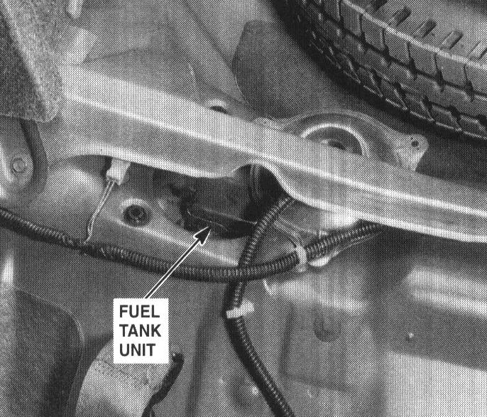

Operation CHARM
: Car repair manuals for everyone.
Home
>>
Acura
>>
1994
>>
Integra (RS, LS) L4-1834cc 1.8L DOHC FI
>>
Repair and Diagnosis
>>
Powertrain Management
>>
Fuel Delivery and Air Induction
>>
Fuel Tank Unit
>>
Locations
Fuel Tank Unit: Locations
99. Behind Right Side Of Rear Seat:

Behind Right Side Of Rear Seat